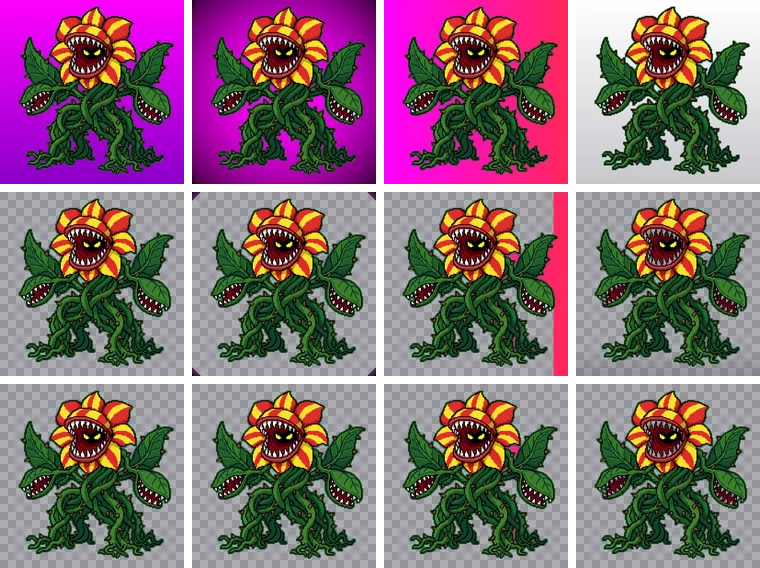
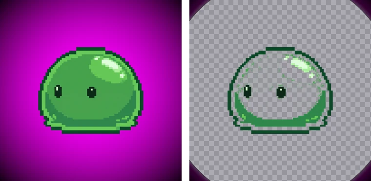

배경이 그라데이션일 때: 배경 제거 문제 해결
“solid background”라고 요청해도 AI는 조명 효과를 넣어 위아래 색을 다르게 하거나, 모서리를 어둡게 하거나(비네팅), 흰 배경을 아래로 갈수록 회색으로 칠하곤 합니다. 이런 그라데이션 배경을 다섯 가지로 만들어 실험해 보니 결과가 뚜렷하게 갈렸습니다. 어떤 그라데이션은 기본 설정으로 깨끗이 지워지고, 어떤 것은 한쪽이 남습니다.
BGPeel은 배경색을 어떻게 정하나
결과를 이해하려면 배경색을 정하는 방식부터 알아야 합니다. BGPeel은 이미지 테두리의 픽셀들을 비슷한 색끼리 묶고, 가장 큰 묶음(채널당 80 이내)의 중앙값을 배경색으로 씁니다. 그다음 배경색과 비슷한 픽셀, 그리고 배경과 이어져 있으면서 색상이 가깝고(기본 −85°~+30°) 채도가 있고(0.3 이상) 너무 어둡지 않은(밝기 80 이상) 픽셀을 배경으로 지웁니다. 그라데이션의 어느 부분이 이 조건에서 벗어나면 그 부분이 남습니다.
실험 방법
식물 몬스터와 슬라임의 배경을 지운 결과를 다섯 가지 그라데이션 배경에 다시 얹었습니다. 실제 AI 이미지에서 자주 보이는 모양을 흉내 낸 실험용 배경입니다. 그리고 기본 설정으로 지운 뒤, 원래 배경이었던 영역 중 조금이라도 남은 비율을 쟀습니다.
- 위 마젠타 → 아래 보라 (140, 0, 200)
- 모서리로 갈수록 어두워지는 비네팅 (모서리 밝기 64)
- 왼쪽 마젠타 → 오른쪽 빨강 (255, 40, 90)
- 위 흰색 → 아래 연회색 (200, 200, 205)
- 아주 강한 비네팅 (모서리 밝기 20)

결과
| 그라데이션 | 식물: 남은 배경 | 슬라임: 남은 배경 | 고친 설정 | 고친 뒤 |
|---|---|---|---|---|
| 마젠타 → 보라 | 0% | 0% | 필요 없음 | – |
| 어두운 비네팅 | 0.86% | 0.57% | 글로우 최소 밝기 20 | 0% |
| 마젠타 → 빨강 | 17.4% | 10.3% | 글로우 색 범위 끝 +60° | 0.51% (식물) |
| 흰색 → 연회색 | 21.8% (옅음) | 18.9% (옅음) | 배경으로 지울 기준 0.3 | 0% |
| 아주 강한 비네팅 | 4.9% | 물체 65.6% 손실 | 설정으로 불가 | – |
마젠타 → 보라: 그대로 지워짐
색상이 마젠타에서 보라로 조금 옮겨 가는 그라데이션은 전부 글로우 색 범위 안이고 밝기도 충분해서, 배경과 이어진 빛번짐처럼 한 번에 지워졌습니다. AI 이미지에서 가장 흔한 ‘살짝 위아래가 다른 배경’은 대부분 이 경우입니다.
어두운 비네팅: 모서리만 남음
모서리 밝기가 64로, 외곽선을 지키는 기준인 80보다 어두워 그 부분이 외곽선으로 판정되었습니다. 남은 것은 네 모서리의 어두운 삼각형(배경의 0.57~0.86%)입니다. ‘글로우 최소 밝기’를 20으로 내리자 0%가 되었고, 슬라임은 어두운 외곽선 일부가 함께 지워져 0.17%를 잃었습니다. 모서리는 물체에서 멀어서 그림 도구로 잘라 내도 됩니다.
마젠타 → 빨강: 한쪽 띠가 남음
가장 크게 남은 경우입니다. 테두리 색 중 가장 큰 묶음이 마젠타 쪽(테두리의 73%)이라 배경색은 (255, 9, 216), 색상 309.5°로 잡혔습니다. 오른쪽 끝 빨강은 색상 346°로 36.5° 떨어져 있어 기본 범위(+30°) 밖이었고, 그 띠가 그대로 남았습니다. ‘글로우로 볼 색 범위’의 끝을 +60°로 넓히자 식물에서 남은 배경이 17.4%에서 0.51%로 줄었고 물체 손실은 없었습니다. 식물 꽃잎에 빨강이 있었지만 외곽선 덕분에 지켜졌습니다. 외곽선 없는 빨강·주황 물체라면 범위를 넓힐 때 함께 지워질 수 있습니다.
흰색 → 연회색: 옅은 막이 남음
흰색·회색처럼 탁한 배경은 ‘탁한·연한 단색’ 방식으로 처리되고, 배경색보다 밝은 쪽은 ‘흰빛이 섞인 배경’으로 지워집니다. 문제는 배경색으로 잡힌 색보다 어두운 쪽입니다. 이 부분은 배경색과 조금 다른 색으로 계산되어 불투명도가 중앙값 7~8%, 가장 진한 곳도 13%인 옅은 막으로 남았습니다. 눈에 잘 띄지 않을 만큼 옅지만, 어두운 배경에 올리면 회색 안개처럼 보입니다. ‘배경으로 지울 기준’을 0.3으로 올리자 0%가 되었습니다. 이때 물체 손실은 1.5~1.9%로 기본 설정과 거의 같았는데, 이 손실은 흰 배경에서 물체의 흰 하이라이트가 배경과 구분되지 않아 생기는 것으로 그라데이션과는 상관없습니다.
흥미롭게도 같은 흰색·회색이라도 가운데가 밝고 가장자리가 어두운 방사형 그라데이션은 기본 설정으로 0% 남았습니다. 배경색을 테두리(어두운 쪽)에서 재니, 나머지가 모두 그보다 밝아 ‘흰빛이 섞인 배경’으로 지워진 것입니다. 그라데이션은 방향에 따라 결과가 달라집니다.
아주 강한 비네팅: 다시 만들어야 함
모서리가 거의 검정(밝기 20)인 경우, 테두리 색 중 가장 큰 묶음의 중앙값이 어두운 자주색 (108, 0, 108)으로 잡혔습니다. 배경색 자체가 틀리게 잡히자 슬라임은 몸의 65.6%를 잃었습니다.

배경색을 마젠타로 직접 지정하면 이번에는 테두리에 그 색과 비슷한 픽셀이 너무 적어 건너뜁니다. 이 정도면 설정으로 고칠 수 없으니 다시 만드세요.
실험과 실제의 차이
실험용 그라데이션은 매끈하게 바뀌지만, 실제 AI 배경에는 그 위에 잔잔한 얼룩이 더해집니다. 얼룩은 대개 배경색과 아주 가까워 문제가 되지 않지만, 그라데이션의 끝부분처럼 원래 기준에 아슬아슬하게 걸친 곳에서는 남는 양이 조금 늘 수 있습니다. 위 표의 설정값은 출발점으로 쓰고, 결과를 보며 조금씩 더 움직이세요.
고치는 순서
- 무엇이 남았는지 확인: 미리보기 배경을 검정·흰색으로 바꿔 보며 모서리, 한쪽 띠, 옅은 막 중 어느 것인지 봅니다.
- 모서리가 어둡게 남음: ‘글로우 최소 밝기’를 내립니다. 외곽선이 끊기기 직전에서 멈추세요.
- 한쪽이 다른 색으로 남음: ‘글로우로 볼 색 범위’를 남은 색 쪽으로 넓힙니다. 마젠타에서 빨강 쪽이면 끝(+), 파랑 쪽이면 시작(−)입니다.
- 옅은 막이 남음: ‘배경으로 지울 기준’을 0.2~0.3으로 올립니다.
- 물체까지 크게 망가짐: 배경색 감지가 실패한 것이니 다시 만듭니다.
그라데이션을 피하는 프롬프트
“flat lighting, even lighting, no vignette, no gradient, uniform background”를 넣고, “studio lighting”, “dramatic lighting”, “spotlight” 같은 조명 표현은 빼세요. 흰 배경은 바닥 그림자와 아래쪽 회색 그라데이션이 잘 생기므로, 흰 물체가 없다면 마젠타가 낫습니다. 도구별 문구는 AI 단색 배경 프롬프트 모음에 정리했습니다.